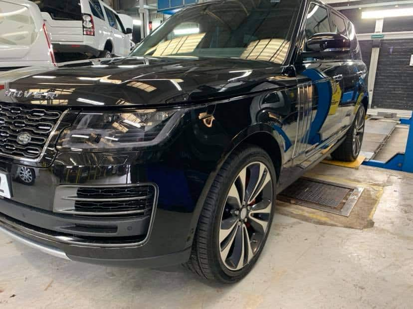

Efficient, Speedy Windscreen Repair Services
Here at Autoglaze, we specialise in windscreen repairs. If you’re searching for windscreen repair near me and have damage on your windscreen, act now and give us a call! It’s best to solve this problem before it grows, as it can be a dangerous distraction.
Our service is fast, friendly, and surprisingly affordable.

Where We Cover
We cover a large area for your convenience, so if you’re in Alsager, Stafford, Crewe, Nantwich, or Stoke, Autoglaze is here to help. If you’re searching for windscreen repair near me or need a full replacement, we have a wide range of new windscreens ready to supply and fit. This ensures you get a great deal, fantastic service, and long-lasting results. All our glass meets manufacturers’ specifications, so whether you drive a Smart car or a Scania, we’ve got you covered.
You can be assured of our service quality, as all windscreen repairs are completed in line with the British Standard Code of Practice BSAU 242A:1998.